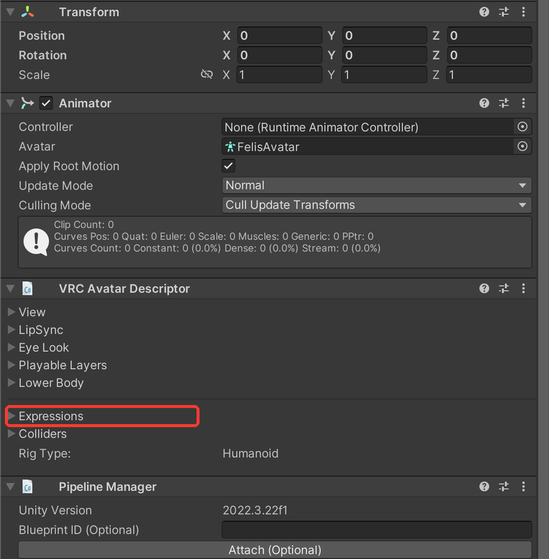

"VRCExpressionsMenu / VRCExpressionParameters object reference is missing" - VRChat fix
Quick fix
- Select the avatar and open Avatar Descriptor > Expressions in the Inspector
- Put the original Menu (or Parameters) file from the avatar's folder into the empty field

Want it checked automatically? Avatar Setup Doctor finds this in one click - free version. Try it free
What you see on screen:
VRCExpressionsMenu object reference is missing. / VRCExpressionParameters object reference is missing.
What it means
Only one of Menu and Parameters is set under Expressions on the Avatar Descriptor. Both must be set to upload.
Common causes
- One field got cleared when you swapped gimmicks or poses
- You replaced only the menu (or only the parameters) yourself
How to fix it
- Select the avatar and open Avatar Descriptor > Expressions in the Inspector
- Put the original Menu (or Parameters) file from the avatar's folder into the empty field
- If a gimmick's readme names a different file, use that
Before you change anything, make a full copy of your project folder so you can go back.
Fix this automaticallyAvatar Setup Doctor adds a window to Unity. Press Diagnose and it lists what's wrong with your avatar project, why, and how to fix it - the paid version fixes many issues in one click. Free version available.
For this problem, it checks that both Menu and Parameters are set.
Get Avatar Setup Doctor (Free version available)
For this problem, it checks that both Menu and Parameters are set.
Get Avatar Setup Doctor (Free version available)